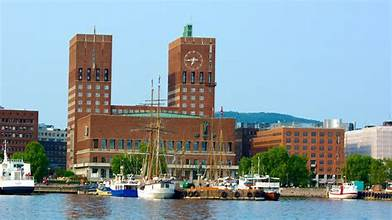
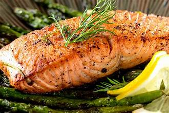
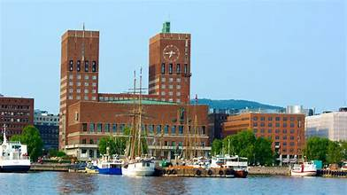
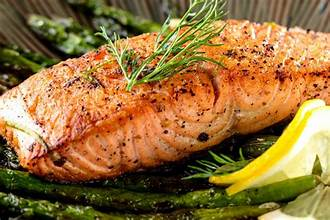

Norway Tour – 6 Days / 5 Nights
Experience the dramatic landscapes of Norway on a 6-day journey through charming cities and natural wonders. Sail through majestic fjords, ride the scenic Flåm Railway, and discover Viking history and Arctic beauty.
 


